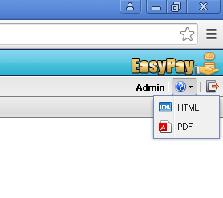

Accessing the help file
The help file is part of the EasyPay installation. To launch it, either press the F1 key or click the help button at the top right corner of EasyPay's main work area.
Printing the help file
Alternatively, you can download and print a PDF version of EasyPay's documentation by clicking on the PDF icon as shown in the figure below.
